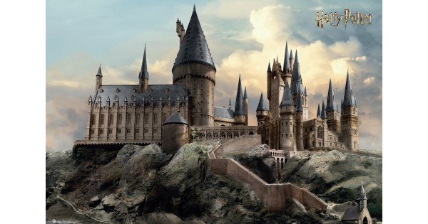

Um dos prazeres de ler J. K. Rowling é descobrir as divertidas referências à história, às lendas e à literatura que ela esconde em seus livros. ''O Mundo Mágico de Harry Potter'' desvenda as pistas deixadas por Rowling e revela significados habilmente escondidos nas aventuras de Harry Potter. Os leitores irão encontrar neste livro as fascinantes origens das criaturas mágicas citadas nos livros e histórias de alquimistas e feiticeiros, reais e imaginárias, através da contribuição de escritores tão variados como Shakespeare, Flaubert, Dickens, Ovídio e Tolkien.
